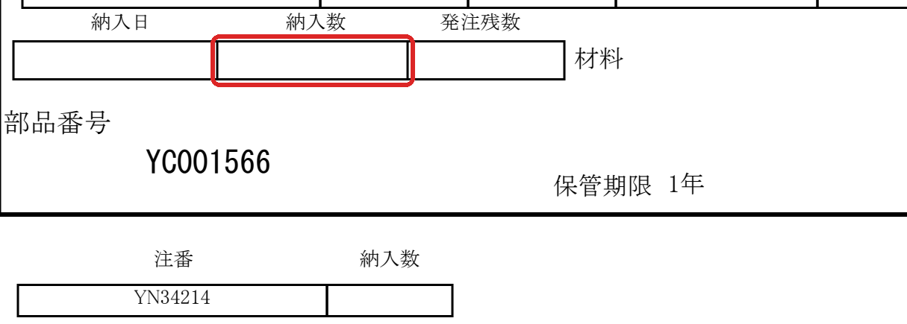
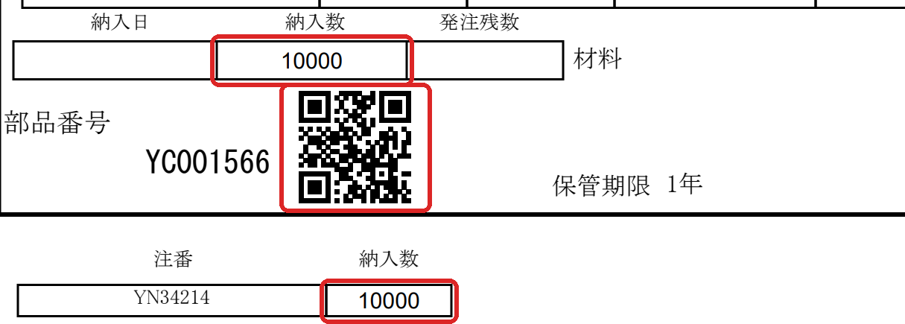

納品書PDFの「納入数」欄に数量を入力すると、2次元バーコードが自動で表示されます。
印刷した納品書を納品物に添付していただくことで、入荷時の確認をスムーズに行うことができます。
ご協力のほど、よろしくお願いいたします。
ご用意いただくもの
| ソフト | Adobe Acrobat Reader（無料・パソコン版）
Windows・Mac のどちらでもご利用いただけます。
お持ちでない場合：https://get.adobe.com/jp/reader/ から無料でダウンロードできます。 |
|---|
| ご利用いただけないもの | Edge・Chrome などのブラウザ、スマートフォン・タブレットでは、入力欄とバーコードが正しく動作しません。 |
|---|
操作手順
- メールに添付された納品書PDFを、パソコンに保存します。
- 保存したPDFを右クリック →「プログラムから開く」→「Adobe Acrobat」を選んで開きます。
ダブルクリックするとブラウザで開く場合があります。必ず Adobe Acrobat Reader で開いてください。
- 納品書の「納入数」欄（下図の赤枠）をクリックし、納入する数量を入力します。
数字のみ入力できます。全角で入力した場合も自動で半角に変換されます。
- Enter キーを押すか、欄の外をクリックします。
部品番号の右側にバーコードが表示され、受領書の「納入数」欄にも同じ数量が自動で表示されます。
- 印刷します。印刷画面で「実際のサイズ」を選んでください。
「ページに合わせる」「縮小」で印刷すると、バーコードが小さくなり読み取れない場合があります。
- 印刷した納品書を、納品物に添付してください。

入力前：赤枠の「納入数」欄をクリックして入力

入力後：バーコードと受領書の納入数が自動で表示
ご注意
数量を変更する場合は、手書きで修正せず、PDFに入力し直して印刷し直してください。
バーコードには入力した数量が記録されているため、手書きの修正はバーコードに反映されません。
よくあるご質問
| バーコードが表示されない | ブラウザで開いている可能性があります。手順2のとおり、Adobe Acrobat Reader で開き直してください。 |
|---|
| 「納入数」欄に入力できない | 数字以外は入力できません。半角・全角の数字で入力してください。 |
|---|
| 入力したPDFを保存しておきたい | Adobe Acrobat Reader の「保存」で保存できます。次に開いたときも入力内容とバーコードは残っています。 |
|---|
ご不明な点がございましたら、納品書の発行元までお問い合わせください。